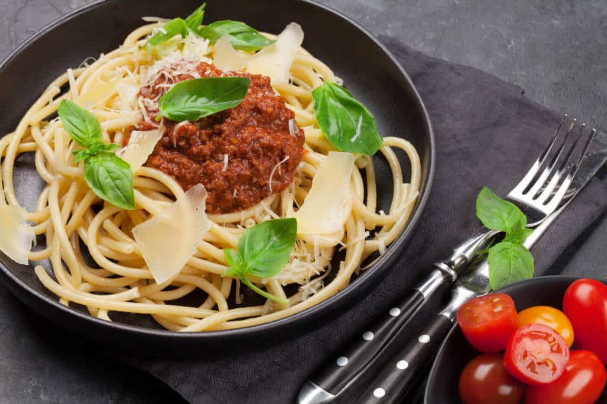

<!doctype html>
<html lang="en">
   <head>
      <!-- Required meta tags -->
      <meta charset="utf-8">
      <meta name="viewport" content="width=device-width, initial-scale=1">
      <!-- Bootstrap CSS -->
      <link href="https://cdn.jsdelivr.net/npm/bootstrap@5.1.0/dist/css/bootstrap.min.css" rel="stylesheet" integrity="sha384-KyZXEAg3QhqLMpG8r+8fhAXLRk2vvoC2f3B09zVXn8CA5QIVfZOJ3BCsw2P0p/We" crossorigin="anonymous">
      <!-- Fuentes -->
      <link rel="preconnect" href="https://fonts.googleapis.com">
      <link rel="preconnect" href="https://fonts.gstatic.com" crossorigin>
      <link href="https://fonts.googleapis.com/css2?family=Lobster&display=swap" rel="stylesheet">
     
      <!-- Font Awesome -->
      <script src="https://kit.fontawesome.com/46f8461f23.js" crossorigin="anonymous"></script>
      <style type="text/css">
         .guatitas {
         background: url(img/guatita.jpg) no-repeat center center;
         background-size: cover;
         height: 250px;
         }
         h1,h2,h3,h4,h5 {
         font-family: 'style script', cursive; /*Se aplica el cambio de fuente*/
         }
        
         ul.rating li{
         color: orange;
      </style>
      <title>GUATITAS A LA JARDINETA</title>
   </head>
   <body>
      <div class="guatitas">
      </div>
      <div class="container-fluid">
      <div class="row">
      <aside>
      <h1>Recetas más populares</h1>
      <div class="card mb-3 " style="max-width: 540px;">
      <div class="row g-0">
      <div class="col-4">
         
      </div>
     <div class="col-md-8"></div>
      <div class="card-body">
         <h4 class="card-title">Picarones con chancaca</h4>
         <p class="card-text">Esta vez traigo una versión
            diferente de Picarones con salsa 
            de chancaca
         </p>
         <p class="card-text"><small class="text-muted">Ir a receta</small>
         </p>
      </div>
    
      <div class="row g-0">
      <div class="col-4">
         
      </div>
       <div class="col-md-8"></div>
      <div class="card-body">
         <h4 class="card-title">Ponche a la Romana</h4>
         <p class="card-text">El ponche a la romana, es un
            trago muy popular en Chile para 
            dias de fiesta, pero por sobre
            todo para el año nuevo, es uno
            de los tragos que más disfruta la gente
         </p>
         <p class="card-text"><small class="text-muted">Ir a receta</small>
         </p>
      </div>
      
      <div class="row g-0">
      <div class="col-4">
         
      </div>
       <div class="col-md-8">
         <div class="card-body">
            <h4>Brazo de reyna de chocolate</h4>
            <p>no se como describir esta
               maravilla de brazo de reina de
               chocolate,realmente la mescla </p>
            <p class="card-text"><small class="text-muted">Ir a receta</small>
            </p>
            </div>

      <div class="row g-0">
      <div class="col-4">
         
      </div>
      <div class="col-md-8">
         <div class="card-body">
            <h4>Spaguetti con salsa boloñesa</h4>
            <p>siempre hay variedades en su
                preparacion, con pequeños
               detalles en la presentacion</p>
         <p class="card-text"><small class="text-muted">Ir a receta</small>
            </p>
             </div> </aside>
           

            <main class="col-lg-9 p-4">
              <div class="card p-4">
               <h1>Guatitas a la Jardinela</h1>
            <ul class="rating">
                  <li class="fas fa-star"></li>
                  <li class="fas fa-star"></li>
                  <li class="fas fa-star"></li>
                  <li class="fas fa-star"></li>
                  <li class="fas fa-star-half-alt"></li>
               </ul>
                <h1 class="mt-3"><u>Ingredientes<u></h1>
               <h4>Para las guatitas</h4>
               <ul>
                  <li>1 paquete de pancita (guatitas)</li>
                  <li> 2 hojas de laurel</li>
                  <li> Sal y pimienta a gusto</li>
               </ul>
               <h4>Para la Jardinera</h4>
               <ul>
                  <li> 1 cucharada de aceite de oliva</li>
                  <li> 1 cebolla cortada en pluma</li>
                  <li> 1 diente de ajo</li>
                  <li> 1 zanahoria cortada en rodajas</li>
                  <li> 1 tomate grande cortado en cuadros</li>
                  <li> 1 taza de salsa de tomate o concentrado de tomate</li>
                  <li> 1 cucharadita de orégano</li>
                  <li> Sal y pimienta a gusto</li>
                  <li>1 taza de arvejas</li>
                  <li> 1 taza de maíz (choclo desgranado)</li>
               </ul>
               <h2 class="md-4">Preparacion</h2>
               <ul class="list-bullets">
               <li> Primero lavar la pancita de res (guatitas) bajo un chorro de agua fría. Luego colocarla en una olla con agua  fría, junto a 2 hojas de laurel, sal y pimienta a gusto, y cocinar por unos 90 minutos. Si usa olla a presión, es sólo 45 minutos.</li>
               <li>Una vez lista, retirar la pancita de res (guatitas), dejarlas enfriar y cortarlas en tiras pequeñas. Reserva
               </li>
               <li> Luego en un sartén colocar el aceite de oliva y freír la cebolla y ajo picado por unos 4 minutos. </li>
               <li> Agregar la zanahoria. Cocinar unos 3 minutos.</li>
               <li> Añadir el tomate picado, salsa de tomate y sazonar con orégano, sal y pimienta a gusto.</li>
               <li> Agregar la pancita de res (guatitas) cortada y 1 taza del agua de la cocción o 1 taza de caldo de carne</li>
               <li>.Mezclar bien y agregar las arvejas y el maíz (choclo)</li>
               <li>Cocinar a fuego medio por unos 4 minutos y apagar.</li>
               <li>Servir la pancita de res (guatitas) con arroz blanco o papas fritas en cuadros.</li>
          </ul>

                  <h1>Deja tus comentarios</h1>
<form class="row g-3">

<div class="mb-3">
  <label for="exampleFormControlInput1" class="form-label">Nombre</label>
  <input type="name" class="form-control" id="name" placeholder="Nombre">
</div>


   <div class="mb-3">
  <label for="exampleFormControlInput1" class="form-label">Email</label>
  <input type="email" class="form-control" id="email" placeholder="name@example.com">
</div>
<div class="mb-3">
  <label for="exampleFormControlTextarea1" class="form-label">Escribe tu mensaje</label>
  <textarea class="form-control" id="message" rows="3"></textarea>
</div>

<div class="col-auto">
    <button type="submit" class="btn btn-primary mb-3">Enviar</button>
  </div>


</form>

</div>


            </main>
             </div>
      <!-- Option 1: Bootstrap Bundle with Popper -->
      <script src="https://cdn.jsdelivr.net/npm/bootstrap@5.1.0/dist/js/bootstrap.bundle.min.js" integrity="sha384-U1DAWAznBHeqEIlVSCgzq+c9gqGAJn5c/t99JyeKa9xxaYpSvHU5awsuZVVFIhvj" crossorigin="anonymous"></script>
   </body>
</html>